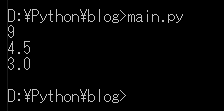
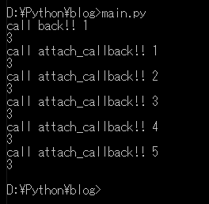

[Python] 11. デコレーター（Decorator）を使う方法
こんにちは。明月です。
この投稿はPythonのデコレーター（Decorator）を使う方法に関する説明です。
デコレーターは関数の再使用と関係があることですが、ただ再使用だけではなく機能を追加する機能だと思えばいいです。関数系の継承だと考えばいいです。
例えば、二つのパラメータを受け取って総合計を計算する関数があります。ここで我々は平均まで計算したいなら関数を修正しなければならないですが、修正しなくても機能を追加することで関数を続けて使用するような方法です。
# デコレーター関数
def decorator_example(func):
# 関数のパラメータは可変に設定する。
def function(*args, **kwargs):
# デコレーターで指定された関数を実行
ret = func(*args, **kwargs)
# その結果をリターンする。
return ret / (len(args) + len(kwargs))
# インライン関数をリターンする。
return function
# 一般な加算関数だ。
def add(a,b):
return a+b
# 加算関数のパラメータに4と5を入れて呼び出したら4+5の結果の9の値が返却する。
c = add(4,5)
# コンソール出力
print(c)
# 上から設定されたデコレーター関数を指定する。指定する方法は「@」マークだ。
@decorator_example
def add2(a,b):
return add(a,b)
# add2の関数を実行すればデコレーター関数に渡す。
# add2にはadd関数を使ったので4+5の9の結果をデコレーターで9/パラメータ個数になるので4.5の結果になる。
c = add2(4,5)
# コンソール出力
print(c)
# add3関数を作った add3はパラメータを５個の数を加算してその結果をデコレーターで渡す。
# パラメータ個数は5個なので(a, b, c, d, e) / 5の構成になる。
@decorator_example
def add3(a,b,c,d,e):
return a + b + c + d + e
# 1 + 2 + 3 + 4 + 5 = 15、つまり 15/ 5 = 3になる。
c = add3(1, 2, 3, 4, 5)
print(c)

実務では上みたいにデコレーターを使うことはありません。ただ、デコレーターを理解しやすく説明するために作成しました。
普通はデコレーターはcallback関数やCount関数、ログを作成するために使います。
# デコレーターにはパラメータを入れらるが、そのため3中インライン関数で実装可能だ。
# 始めの関数はデコレーターのパラメータ
def callback(cb):
# 二つ目の関数はデコレーターが宣言された関数
def wrapper(func):
# 関数呼び出すカウンター
count = 0
# 関数を呼び出すデコレーター部分
def function(*args, **kwargs):
# wrapperのcount変数
nonlocal count
# デコレーターで指定された関数を実行
ret = func(*args, **kwargs)
# count関数に1を増加
count += 1
# デコレーターパラメータが関数タイプなら呼び出す。
if str(type(cb)) == "<class 'function'>":
# 関数呼び出す。
cb(count)
return ret
return function
return wrapper
# callbackデコレーターにラムダ関数を入れる
@callback(lambda p : print("call back!! " + str(p)))
# add関数
def add(a,b):
return a + b
# add関数が呼び出したらラムダ関数が呼び出す。
print(add(1,2))
# ラムダ関数ではない一般関数でも設定が可能
def attach_callback(count):
# コンソール出力
print("call attach_callback!! " + str(count))
# callbackデコレーターでattach_callback関数を入れた。
@callback(attach_callback)
# add2関数
def add2(a,b):
return a + b
# add2関数が呼び出すとattach_callback関数も呼び出す。
print(add2(1,2))
print(add2(1,2))
print(add2(1,2))
print(add2(1,2))
print(add2(1,2))
print(add2(1,2))

上の例みたいに使えばadd関数に呼び出すたびにログを残せます。デコレーター側にはパラメータ個数とは関係ないので、他の関数でも使うことができます。
callback関数ではラムダだけではなく、一般関数を入れることができます。
なので複雑なロジックでも設定ができます。
ここまでPythonのデコレーター（Decorator）を使う方法に関する説明でした。
ご不明なところや間違いところがあればコメントしてください。
「Study / Python」の他投稿
- [Python] 21. データベース(mariaDB)を連結する方法2020/06/24 18:51:50
- [Python] 20. stringフォマード(Formatting)と補間法(interpolation)2020/06/23 19:03:21
- [Python] 19. 非同期IOのasync/await(asyncio)を使う方法2020/06/22 18:10:12
- [Python] 18. ネットワーク(Socket)通信する方法2020/06/18 19:53:56
- [Python] 17. スレッド(Thread)とロック(lock)、そしてデッドロック(deadlock)2020/06/18 00:19:45
- [Python] 16. IO(ファイル読み取り、書き込み)を扱う方法2020/06/16 18:37:00
- [Python] 15. クラスを継承する方法2020/06/15 18:20:07
- [Python] 14. クラスプロパティ(Property)2020/06/12 17:45:13
- [Python] 13. クラス関数(class method)とダック・タイピング、そして特殊メソッド2020/06/11 19:42:29
- [Python] 12. クラス(Class)を使う方法2020/06/10 19:33:33
- [Python] 11. デコレーター（Decorator）を使う方法2020/06/09 17:27:18
- [Python] 10. モジュールとパッケージ(import)2020/06/08 19:07:50
- [Python] 09. 例外処理する方法2020/06/05 17:11:47
- [Python] 08. ジェネレータ(Generator)2020/06/04 18:46:08
- [Python] 07. globalとnonlocal2020/06/03 20:34:49
最新投稿
- [Python] PythonとJavaのソケット通信する方法2020/07/03 18:35:50
- [Python] PythonとC#のソケット通信2020/07/01 19:28:22
- [Python] INI(環境設定ファイル)を扱う方法2020/06/30 18:26:01
- [Python] Jsonを扱う方法2020/06/29 19:18:15
- [Python] XMLファイルを扱う方法2020/06/26 19:18:14
- [Python] IOを利用してCSVファイルを扱う方法2020/06/25 18:20:30
- [Python] 21. データベース(mariaDB)を連結する方法2020/06/24 18:51:50
- [Python] 20. stringフォマード(Formatting)と補間法(interpolation)2020/06/23 19:03:21
- [Python] 19. 非同期IOのasync/await(asyncio)を使う方法2020/06/22 18:10:12
- [Python] 18. ネットワーク(Socket)通信する方法2020/06/18 19:53:56
- [Python] 17. スレッド(Thread)とロック(lock)、そしてデッドロック(deadlock)2020/06/18 00:19:45
- [Python] 16. IO(ファイル読み取り、書き込み)を扱う方法2020/06/16 18:37:00
- [Python] 15. クラスを継承する方法2020/06/15 18:20:07
- [Python] 14. クラスプロパティ(Property)2020/06/12 17:45:13
- [Python] 13. クラス関数(class method)とダック・タイピング、そして特殊メソッド2020/06/11 19:42:29